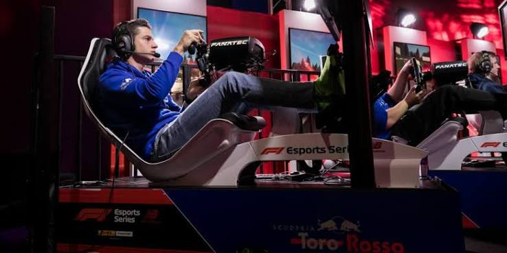

simracen
Simracen is virtueel autoracen met een racesimulator. Je gebruikt vaak een stuur en pedalen voor een realistisch gevoel.

info over simracenSimracen is virtueel autoracen met een racesimulator. Je gebruikt vaak een stuur en pedalen voor een realistisch gevoel.

info over simracen